<mat-toolbar color='primary'>
        <mat-toolbar-row>
            
            <span class="spacer"></span>
            <button mat-button>View on Github</button>        
            <button *ngIf="!(authService.user | async)" (click)="openLogIn()" mat-button><mat-icon class="example-icon">lock_open</mat-icon>Log In</button>
            <button *ngIf="authService.user | async" (click)="logout()" mat-button><mat-icon class="example-icon">lock_outline</mat-icon>Log Out</button>
        </mat-toolbar-row>
    </mat-toolbar>